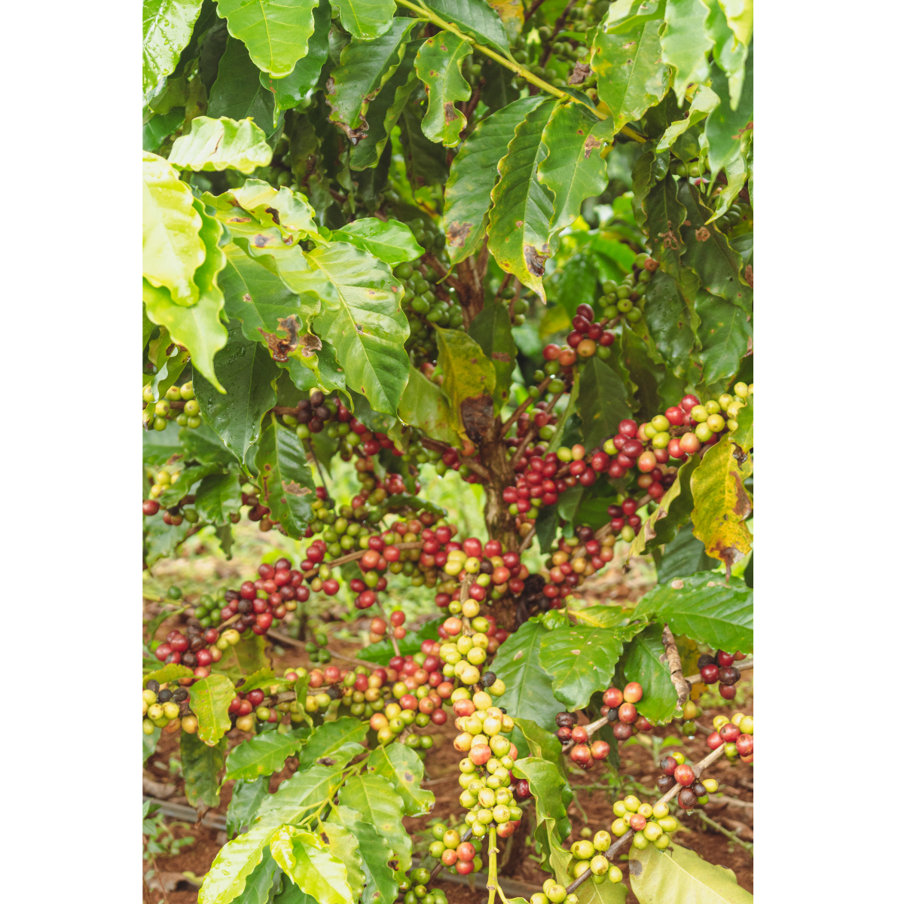

Siglo XVIII
Inicio del café en Colombia
El café comenzó a introducirse en Colombia durante el siglo XVIII como parte de un proceso gradual de adaptación agrícola. Este proceso no fue inmediato ni uniforme, sino que se desarrolló poco a poco en distintas regiones del territorio, donde el cultivo fue probándose bajo diferentes condiciones ambientales y sociales. De acuerdo con Marco Palacios, la historia del café en Colombia debe entenderse como un proceso histórico que se desarrolla a lo largo del tiempo, desde sus primeras etapas de introducción hasta su consolidación en el siglo XIX; por eso, para este primer momento resulta más riguroso hablar del siglo XVIII como una etapa de introducción, en lugar de fijar un año único sin respaldo directo de estas fuentes. Esto implica reconocer que el café no aparece de forma repentina, sino que atraviesa una fase inicial en la que comienza a ser conocido, sembrado y observado dentro de las dinámicas rurales.
Según el Manual del cafetero colombiano (Federación Nacional de Cafeteros de Colombia, 1958), la introducción del café en Colombia debe comprenderse dentro de un proceso histórico de adaptación agrícola favorecido por condiciones naturales propicias para el cultivo, que permitieron el establecimiento progresivo del café en el territorio. Estas condiciones incluyen factores como la altitud, el clima de montaña y la fertilidad de los suelos, que hicieron posible que el cafeto se desarrollara en distintas zonas del país. De acuerdo con esta fuente, estos desarrollos iniciales constituyeron un antecedente fundamental para la expansión posterior de la caficultura colombiana y para la consolidación del café como actividad económica y cultural en los siglos siguientes, lo que demuestra que, aunque en este momento el café no tenía aún un papel económico fuerte, sí estaba sentando las bases de su crecimiento futuro.
A su vez, el libro conmemorativo Federación Nacional de Cafeteros de Colombia, 1927–2017, 90 años: vivir el café y sembrar el futuro, publicado en 2017, sirve como respaldo institucional para comprender la relevancia histórica del café dentro del país y el papel de la Federación Nacional de Cafeteros de Colombia en la consolidación de la caficultura colombiana. Aunque esta obra no es la que fija el origen del cultivo, sí ayuda a contextualizar por qué el café terminó convirtiéndose en un elemento central de la historia nacional, al mostrar cómo, con el paso del tiempo, este producto pasó de ser un cultivo en adaptación a convertirse en un eje económico, social y cultural que transformó amplias regiones del país.